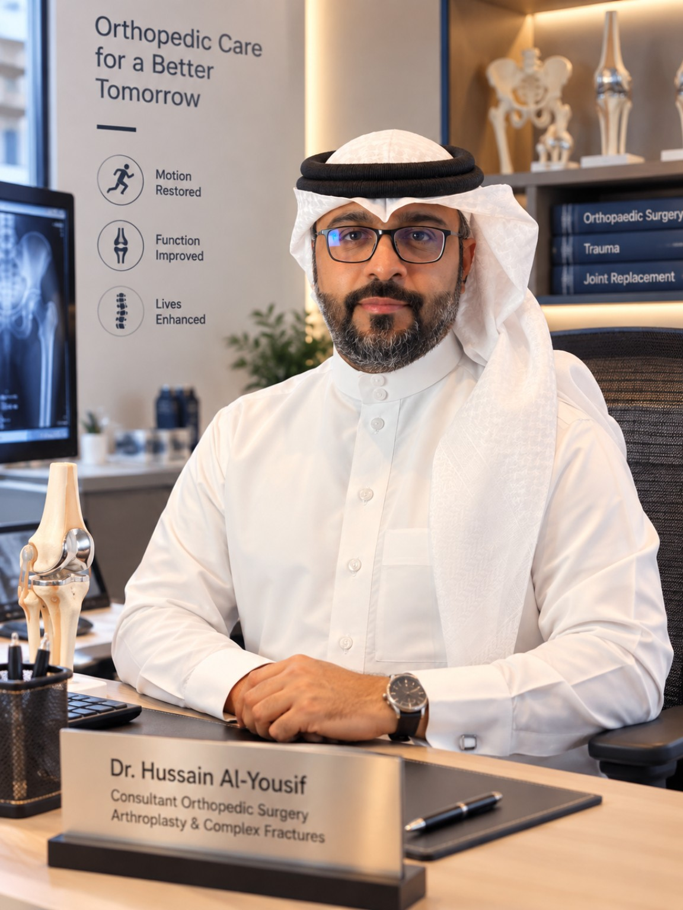
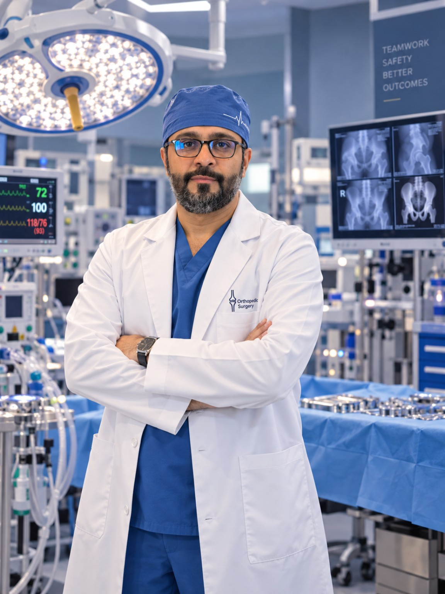
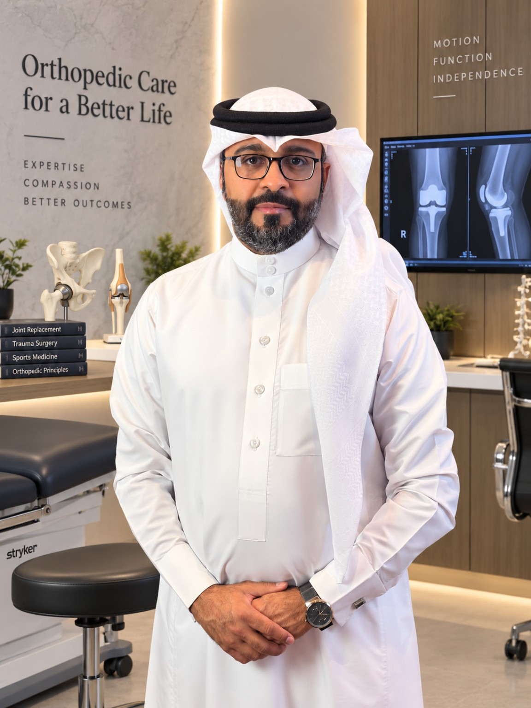

مؤهلات وخبرات عالمية
تدريب وزمالات كندية متخصصة في جراحات مفاصل الورك والركبة والكسور المعقدة.
تشخيص أدق… علاج أنسب… وحركة أفضل.
استشاري جراحة العظام والمفاصل الصناعية والكسور المعقدة
نستمع إليك، نفهم معاناتك وأثرها على حياتك، ثم نصل إلى التشخيص الصحيح ونناقش الخيارات العلاجية المناسبة بوضوح. الجراحة ليست دائمًا الخيار الأول، وإنما الخيار المناسب في الوقت المناسب.

من العلاج التحفظي والتمارين والحقن في الحالات المختارة إلى استبدال المفصل عند الحاجة.
اعرف أكثر ↖ 02تقييم مصدر الألم وخيارات الحفاظ على المفصل أو استبداله بحسب الحالة.
اقرأ المزيد ↖ 03تشخيص سريري، برنامج تقوية وحركة، وتدرج آمن للعودة للنشاط.
اقرأ المزيد ↖ 04تقييم الإصابات المعقدة ووضع خطة دقيقة بحسب الاستقرار والتطابق المفصلي.
اعرف أكثر ↖ 05الكسور متعددة الأجزاء والحالات التي تحتاج تثبيتًا أو ترميمًا متقدمًا.
اعرف أكثر ↖ 06عدم الالتئام، سوء الالتئام، فشل التثبيت، وتقييم إزالة الشرائح والمسامير.
اعرف أكثر ↖الثقة لا تُبنى بعنوان وظيفي فقط، بل بخبرة قابلة للتحقق ونهج علاجي واضح ومفهوم للمريض.
تدريب وزمالات كندية متخصصة في جراحات مفاصل الورك والركبة والكسور المعقدة.
خبرة في الحالات البسيطة والمعقدة مع مراعاة عمر المريض، نشاطه وأهدافه من العلاج.
توظيف التقنيات الحديثة عندما تضيف قيمة فعلية للدقة والأمان والنتيجة المتوقعة.
التدرج من الخيارات التحفظية والعلاج الطبيعي والتأهيل إلى الجراحة فقط عندما تكون الخيار الأفضل.
تبدأ رحلة العلاج بالاستماع والفحص الدقيق، وتمتد إلى الجراحة والتأهيل والمتابعة عند الحاجة.


نستمع إلى شكواك، نفهم أثرها على حياتك ونشاطك، ثم ننتقل للفحص الدقيق ونستعين بالأشعة والتحاليل عند الحاجة. بعد الوصول للتشخيص، نضع خطة علاجية مبنية على البراهين ومصممة حسب حالتك واحتياجاتك وأهدافك.
وإذا كانت العملية هي الخيار الأفضل، نشرح لك الخيارات والفوائد والمخاطر ونتخذ القرار معًا.
محتوى تثقيفي مبني على الإرشادات العلمية والمراجع الموثوقة، مع توضيح قوة الدليل وحدود كل خيار علاجي.
ما هي الخشونة؟ لماذا تحدث؟ كيف نشخصها؟ ومتى تكفي التمارين والعلاج التحفظي ومتى تصبح الجراحة خيارًا مناسبًا؟
الأعراض والتشخيص، العلاج الطبيعي، الأدوية، الحقن والجراحة. مع توضيح أن حقن الهيالورونيك داخل الورك لا توصي بها AAOS.
تشخيص سريري، تعليم المريض، تقوية الركبة والورك، وتدرج العودة للجري والنشاط.
مستقر أم غير مستقر؟ علامات الخطر، مبادئ العلاج، التحميل والتأهيل حسب نمط الإصابة.
التطابق المفصلي والاستقرار، الأشعة وCT، متى تكفي المتابعة ومتى تكون الجراحة أفضل.
لقاءات إعلامية تهدف إلى تبسيط المعلومات الطبية وتصحيح المفاهيم الشائعة حول العظام والمفاصل.
 شاهد اللقاء
برنامج يا هلا · روتانا خليجيةطرق علاج خشونة الركبةتخفيف الوزن والعلاج الطبيعي قبل الجراحة
شاهد اللقاء
برنامج يا هلا · روتانا خليجيةطرق علاج خشونة الركبةتخفيف الوزن والعلاج الطبيعي قبل الجراحة
شرح مبسط لعوامل الخطورة والأسباب الثانوية وأهمية التشخيص الصحيح.
شاهد التغطية ↖توعية حول الوقاية من إصابات وإجهاد الجهاز العضلي الهيكلي خلال مواسم الحج.
مشاركات إعلامية ومهنية مرتبطة بالتوعية الطبية وتطوير الخدمات الجراحية.
الزيارة الأولى هدفها أن تخرج بصورة أوضح عن حالتك وخياراتك، وليس مجرد توصية عامة.
المعلومات في هذا الموقع للتثقيف ولا تغني عن التقييم الطبي المباشر.